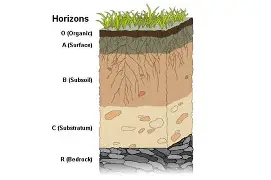

Proses Pembentukan Tanah (Pedogenesis)
Proses pedogenesis melibatkan:
- Pelapukan: batuan induk mengalami pelapukan fisik, kimia, dan biologis.
- Transportasi dan Deposisi: partikel tanah berpindah dan menetap di lokasi tertentu.
- Akumulasi bahan organik: dari sisa-sisa tumbuhan dan hewan yang terdekomposisi.
- Pembentukan horizon: lapisan-lapisan tanah terbentuk secara vertikal.

Lanjut ke Halaman 5 »